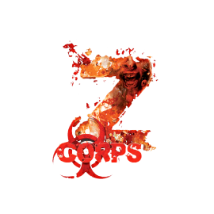

Jeux de rôle
Les jeux de rôle sont des histoires imaginaires dans lesquelles des joueurs
et des joueuses incarnent des personnages dans des aventures scénarisées et encadrées par
un Game Master ou Maitre de Jeu. Vous avez déjà surement entendu parler au moins de l'un d'entre eux : Donjon & Dragon .
Les univers traversés par les jeux de rôle sont aussi vastes et diversifiés qu'en littérature.
Certains traitent de mondes médiévaux fantastiques comme Game of Thrones (Le trône de fer),
d'autres ont des ambiances plus sombres (L'appel de Cthulhu). Certains se rapprochent de la réalité (Cops)
ou bien ils s'élancent dans des mondes futuristes imaginaires (Fading Sun).
Au final, la seule limite aux jeux de rôle n'est rien de moins que l'imagination.
Lors de mes aventures, j'ai scénarisé plus d'une centaine de sessions composées généralement
de groupes de quatre à six joueurs. Si la plupart des parties se sont faites autour d'une table
en face à face, la crise sanitaire m'a poussé vers une gestion plus numérique
et à tester des formats différents comme des "Murder Party" (Soirée d'enquête). Chaque séance peut
durer entre deux et sept heures en fonction du jeu, des joueurs et du scénario.
